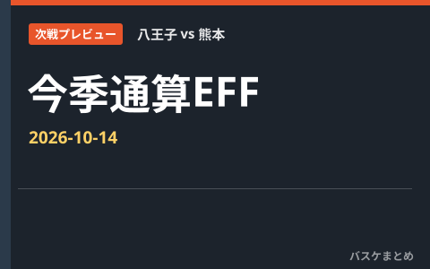

八王子 vs 熊本 次戦プレビュー｜ポジション別・今季平均EFF

2026年10月14日 19:05 JST予定。B.ONE 2026-27 レギュラーシーズンの公式今季平均EFFで、両チームの現在登録選手を比較します。
現在の登録は当日のエントリー・出場確定を意味しません。出場情報を確認できない選手は「出場未確認」と表示します。各ポジション上位3人を表示します。同点で3人目に並ぶ選手も掲載します。複数ポジションは各表へ掲載し、同値は同順位とします。
PG｜今季平均EFF
表は横にスクロールできます。出場状況もご確認ください。
| 順位 | 選手（所属） | 平均EFF | 出場試合数 | 出場状況 |
|---|---|---|---|---|
| 1 | 山本 楓己（八王子） | 13.3 | 4 | 出場未確認 |
| 2 | 石川 海斗（熊本） | 9.7 | 6 | 出場未確認 |
| 3 | 神里 和（八王子） | 5.8 | 4 | 出場未確認 |
| 3 | 笹倉 怜寿（熊本） | 5.8 | 5 | 出場未確認 |
SG｜今季平均EFF
表は横にスクロールできます。出場状況もご確認ください。
| 順位 | 選手（所属） | 平均EFF | 出場試合数 | 出場状況 |
|---|---|---|---|---|
| 1 | 山本 翔太（熊本） | 10.0 | 6 | 出場未確認 |
| 2 | 平 凌輝（八王子） | 6.0 | 4 | 出場未確認 |
| 3 | 山田 安斗夢（熊本） | 4.7 | 6 | 出場未確認 |
SF｜今季平均EFF
表は横にスクロールできます。出場状況もご確認ください。
| 順位 | 選手（所属） | 平均EFF | 出場試合数 | 出場状況 |
|---|---|---|---|---|
| 1 | LJ・ピーク（熊本） | 25.5 | 6 | 出場未確認 |
| 2 | ジャスティン・マッツ（熊本） | 22.7 | 6 | 出場未確認 |
| 3 | 磯野 寛晃（熊本） | 4.3 | 6 | 出場未確認 |
PF｜今季平均EFF
表は横にスクロールできます。出場状況もご確認ください。
| 順位 | 選手（所属） | 平均EFF | 出場試合数 | 出場状況 |
|---|---|---|---|---|
| 1 | グレゴリー・エチェニケ（熊本） | 24.2 | 6 | 出場未確認 |
| 2 | ネイサン・ラシェフスキー（八王子） | 23.0 | 4 | 出場未確認 |
| 3 | ジャスティン・マッツ（熊本） | 22.7 | 6 | 出場未確認 |
C｜今季平均EFF
表は横にスクロールできます。出場状況もご確認ください。
| 順位 | 選手（所属） | 平均EFF | 出場試合数 | 出場状況 |
|---|---|---|---|---|
| 1 | グレゴリー・エチェニケ（熊本） | 24.2 | 6 | 出場未確認 |
| 2 | ネイサン・ラシェフスキー（八王子） | 23.0 | 4 | 出場未確認 |
| 3 | クベマ スティーブ（八王子） | 18.0 | 4 | 出場未確認 |
欠場情報・ランキング対象外
- 宮本 龍世（八王子）：平均記録未確認。
- モッチ ラミン（熊本）：公式欠場・IL・停止。公式IL登録中（取得時点）。選手公示日：9月18日／リスト登録日：9月18日。次戦時点の解除・登録は再確認が必要
平均EFFは公式の今季平均（dt=avg）を使用し、通算合計を試合数で割って作り直しません。移籍選手は同一リーグの公式TOTALが確認できた場合に採用し、所属別平均の単純平均や合算は行いません。
出典：B.LEAGUE公式
公式試合詳細（取得 2026-10-14 02:14 JST）
公式用語集・EFF定義（取得時刻未記録）
公式スタッツ（今季平均・EFF）（取得 2026-10-14 02:16 JST）
公式インジュアリーリスト（取得 2026-10-14 02:14 JST）
公式クラブ登録選手一覧（取得 2026-10-14 02:17 JST）
公式クラブ登録選手一覧（取得 2026-10-14 02:17 JST）
公式記録・発表は訂正される場合があります。出場は保証されません。最新情報は公式サイトをご確認ください。